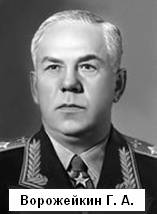

| Организатор управления Военно – воздушными силами.
Ворожейкин Григорий Алексеевич (1895-1974), военачальник, Маршал авиации (1944).
Родился в деревне Березники ныне Нелидовского района Тверской области. Семья крестьянская, многодетная, а потому после окончания двухклассной школы (земской) начал помогать родителям - нанялся рабочим сначала на фанерный, а затем на лесопильный заводы. Однако это был не простой деревенский паренёк: пока работал, учился самостоятельно и экстерном сдал экзамены за 6 классов средней школы.
В 1915 году двадцатилетним парнем призван в армию,зачислен во 2-й запасной пехотный батальон; вскоре поступил в школу прапорщиков в Пскове, и по её окончании направлен на Северо-Западный фронт. Воевал достойно: к 1917 году Григорий Ворожейкин имел звание штабс-капитана, командовал ротой 149-го Черноморского полка. После февральской революции в армии наступила «демократия», поэтому солдаты и младшие командиры избрали Ворожейкина начальником связи 22-го стрелкового полка 3-й дивизии. И далее солдаты доверяли штабс-капитану. Вскоре после большевистской «революции» его назначают командиром полка, начальником штаба бригады. Воюет Ворожейкин в Красной Армии на Южном и Юго-Западном фронтах, весьма успешно.
Окончилась гражданская война, Григорий Ворожейкин уже командир стрелковой дивизии. Как и многие другие советские военачальники, Ворожейкин повышал свой образовательный уровень непрерывно: в 1924 году окончил стрелково-тактическую школу им. III Коминтерна, в 1930 году - тактические курсы усовершенствования комсостава, после чего он становится командиром 16-й стрелковой дивизии Ленинградского военного округа. В члены ВКП(б) Григорий вступил в 1927 году.
В начале 1930-х годов в Советском Союзе очень большое внимание уделялось развитию авиации. Подготовленных кадров не хватало, поэтому превращение военных «сухопутчиков» в авиационные не то чтобы поощрялось, но и препятствий особых не ставилось. В 1932 году успешный комдив Григорий Ворожейкин стал слушателем Военно-воздушной академии им. Н.Е. Жуковского, окончил её оперативный факультет в 1934 году и был назначен командиром и одновременно комиссаром 200-й легкобомбардировочной авиабригады.
Авиация - дело непростое, особенно для командира. В его обязанности входили организация полётов молодых летчиков, дисциплина в частях, выполнение устава и многое другое. И над собой надо было работать: изучать новую технику, осваивать литературу и инструкции, анализировать отечественный и зарубежный опыт по ведению воздушной борьбы. Кроме того, он отвечал за идеологию, ведь Ворожейкин являлся ещё и комиссаром. Служба шла успешно, поэтому через два года, в 1936 году, Ворожейкина назначают помощником командующего Краснознаменной Дальневосточной армии по авиации, а в январе 1941 года Григорий Ворожейкин назначается командующим ВВС Приволжского военного округа в звании полковника.
Грянула война с фашистами. Полковник Ворожейкин командует на фронте авиацией 21-й армии (командарм генерал-лейтенант В.Ф. Герасименко), затем ВВС всего Центрального фронта, а 3 июля 1941 года ему присваивается звание генерал-майора авиации. В конце августа 1941 года приказом И. Сталина Ворожейкин назначен начальником штаба ВВС Красной Армии, чего сам такого возвышения не ожидал. Приехав в Москву для доклада командующему ВВС, своему земляку Павлу Жигареву, Ворожейкин изложил личные сомнения - справится ли он со столь ответственной службой? Командующий в этом не сомневался.
И все же во время одного из своих докладов Верховному - Иосифу Сталину - Григорий Ворожейкин попросил освободить его от обязанностей начальника штаба. Просьбу Верховный удовлетворил, назначив Ворожейкина первым заместителем Жигарева. Произошло это в марте 1942 года.
Особое внимание Ворожейкин уделял вопросам взаимодействия как между авиационными соединениями и частями, так и между авиацией и наземными войсками при проведении армейских и фронтовых операций. Система связи, создание резервов, формирование ударных авиагрупп тоже были под постоянным контролем заместителя командующего ВВС.
В середине 1942 года Г.А. Ворожейкин становится представителем Ставки ВГК. Он побывал в войсках на всех фронтах, кроме Карельского. Главный маршал авиации Александр Новиков (1900-1976) в 1975 году вспоминал: «В начале 1942 года координировал действия авиации Ленинградского и Волховского фронтов, в июле командовал авиационной группой под Воронежем, летом 1943 года участвовал в битве под Курском. С 1 сентября 1944 года и до конца войны Г.А. Ворожейкин в качестве представителя Ставки по авиации координировал действия ВВС Второго, Третьего и Четвертого Украинских фронтов. Принимал самое активное участие в Балатонской, Будапештской, Белградской, Пражской операциях». Авторы воспоминаний и соратники Ворожейкина характеризуют его как специалиста высокой квалификации с большими организаторскими способностями.
19 августа 1944 года Г.А. Ворожейкину присвоено звание Маршала авиации.
Кончилась война. В 1946 году Григорий Алексеевич командует авиационным объединением, на следующий год его увольняют в отставку, для него самого не совсем понятно - за что. В 1953 году, после смерти Сталина, Ворожейкин вернулся на службу из запаса, его назначают начальником факультета Академии им. Жуковского. Через 6 лет, в 1959 году, учитывая неважное здоровье, сам попросился в отставку и уволился из кадрового состава армии. Потом долго болел, под конец болел тяжело. Умер Григорий Алексеевич 30 января 1974 года, похоронен в Москве. Награждён 2 орденами Ленина, 4 орденами Красного Знамени, 3 орденами Суворова (два — 1-й степени, один — 2-й степени), орденом Красной Звезды, медалями. К сожалению Маршала Ворожейкина на Тверской земле не очень помнят.
<< Предыдущая страница |